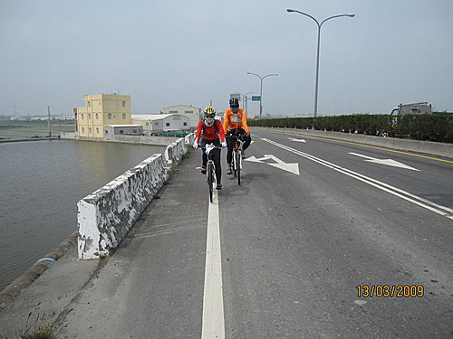

2009年3月13日（星期五）環島第八日
2009年3月13日（星期五）環島第八日
行程：台中縣大甲鎮─梧棲漁港─鹿港─天后宮─西濱大橋─東石靜心民宿（全程149公里）
本日行程特色一：當日完成最長旅程149公里。
本日行程特色二：當日旅程跨越台中、彰化、雲林、嘉義四個縣市。
環島第八日簡介：
這是我們環島行程第七晚在台中縣大甲鎮所投宿的夏威夷汽車旅館，主辦單位為了讓我們的環島旅程獲得充分的休息，特別精選出來的大甲鎮頂級旅館
一大早醒來，阿山哥開完笑說：飯店應該給沒有住過汽車旅館的人一個紅包。經詢問後，我們這一群人果真很多人都是第一次住汽車旅館，大家就在嬉笑中展開了今天的環島旅程。
我們先前往著名的梧棲漁港一遊！
進人梧棲港，有專用自行車道，
我們選擇天后宮前的小吃部「廟口第一家」用餐
中當天中午的菜單，我們選擇八人份的餐點
吃完餐點，我們和店裡的服務人員（左起第三人，也可能是老板娘）合照，她說下次拿此照片來用餐可打折。幾天前，我再度重遊鹿港，持此照片至該處用餐，她竟只記得曾經我們拍照之事，但已經忘了打折這件事情，但對我這個熟客，似乎有更很親切的問候，我想只要高興就好，如此親切的招乎應該已經足夠了！
這是鹿港名產─蝦猴
用完餐，我們到隔壁的冰店吃冰！
出發前，環島九人組在鹿港天后宮前合照，並祈求媽祖保估我們環島順利！
我們沿著台十七線南下，台十七線車子很少，很特別的是平面道路是台十七線，而高架道路是台六十一線（汽車及重型機車專用），很少見到如此的道路規劃！
環島九人組，無畏烈日向南推進！

台十七線沿線的農村景象
值得紀念的一刻，當日個人「冠軍二號」愛車，旅程完成6千公里！
旅途中，我們經過了著名的「成龍濕地」，夕陽好美，但是東石港何時才會到呢？
看到熬鼓濕地的標誌，隊友的心情都輕鬆起來了，認為應離目的地不遠了。但好像我們是摸黑繼續騎了十多公里才到投宿地點。

夜宿東石港靜心民宿，外觀蠻美的，但晚上因海風極強，房子似乎對強風難以招架，睡時狂風大作，戶外與室內程度幾乎相同！
晚上，我們在廣場上享受女主人特別為我們準備的晚餐，並且享用頂級法國葡萄酒及頂級法國紅酒！
女主人特別準備的豐盛晚餐，主人家說食材大都出自於東港地區
飯是用古老的木桶裝著，旁邊還擺了人頭馬VSOP洋酒及頂級法國紅酒，對比極為強烈
翌日早晨，環島九人組精神特別振奮，因過了今天，我們就要完成河東獅車隊歷史性的環島旅程（待續）